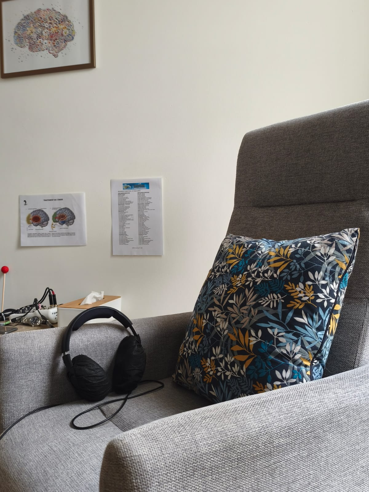

Ressources
Identifier et renforcer les capacités déjà présentes.
Hypnose ericksonienne
L'hypnose ericksonienne accompagne un état d'attention particulier, entre présence et intériorité, pour favoriser un travail avec l'imaginaire, les sensations et les apprentissages personnels.
Le praticien propose des images, des métaphores et des points d'attention. La personne reste actrice de son expérience et peut signaler à tout moment ce qui lui convient ou non.
Cette approche peut aider à explorer une difficulté, préparer un changement, renforcer une ressource ou retrouver un rapport plus apaisé à certaines situations.

Axes de travail
Identifier et renforcer les capacités déjà présentes.
Clarifier ce qui doit changer et les premiers signes d'évolution.
Respecter le rythme, les limites et la disponibilité émotionnelle.
Laisser émerger des repères simples à réutiliser dans le quotidien.